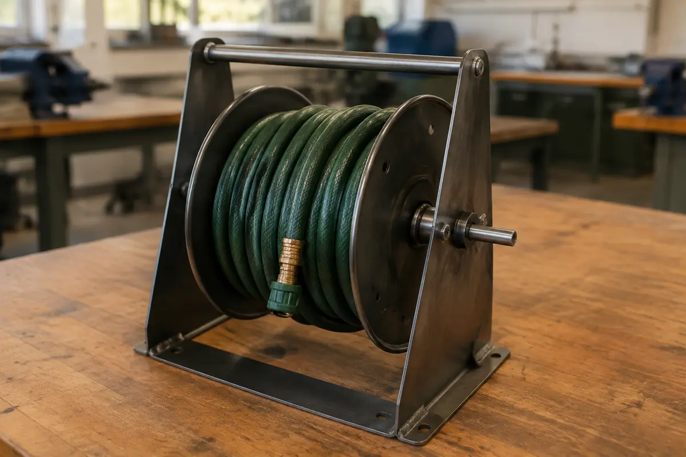

1. Read and inspect
Use the project theory and teacher-issued references to understand the current stage.
Year 8 · Stage 4 · Industrial Technology – Metal elective
Read the project. Work with control. Prove the process.

Hose Reel Holder
This 50-period introductory unit supports the existing project through five four-week modules. Teacher-issued plans and demonstrations control dimensions, components and production details.
How the course works
Use the same four-step routine to connect theory, feedback, workshop decisions and evidence.
Use the project theory and teacher-issued references to understand the current stage.
Complete the checks and use feedback before moving into practical work.
Connect the learning to teacher-supervised workshop production.
Keep written explanations and quality evidence, then use Print / Save PDF.
Student evidence. Checks, written evidence and folio work autosave in this browser. Keep a PDF copy outside the webpage.
Course pattern. 20 weeks · 50 × 60-minute periods · 5 periods per fortnight · average 2.5 hours per week. Additional study is required to complete the school's named 100-hour Industrial Technology – Metal elective.
Guided pathway
Brief, users, constraints, workshop entry and machine permission.
Open module →Working drawings, datum edges, marking-out and pre-cut checks.
Open module →Workholding, cutting, edge preparation, forming and stop signals.
Open module →Trial fit, alignment, approved joining and corrosion protection.
Open module →Teacher-approved testing, folio organisation and specific evaluation.
Open module →Capture the brief, safety, planning, production, testing, problem solving and evaluation in one editable folio.
Open folio →NSW syllabus alignment
Approved early adoption applies for 2027. The Stage 5 outcomes below are adjusted for Stage 4 under INT4-ADJ-01. This unit can provide evidence towards selected outcomes; final school programming and assessment mapping remain teacher decisions.
Assessment and evidence
Safe production, accuracy, construction quality, function and finish, judged using teacher-issued criteria.
A 12-part evidence trail covering the brief, ideas, planning, production, testing and evaluation.
Module checks, written explanations, problem-solving evidence and an evidence-based final evaluation.
Resources
Official course structure, content and implementation information from NSW Curriculum.
Open official syllabus ↗The 2026 handbook record is separated from the current 2027 elective program, with the informal class-test boundary stated clearly.
Open assessment boundary →A password-protected course test with independent autosave and Print / Save PDF submission. This is not a formal handbook task; the teacher will confirm the date.
Open class test →The original weekly pages remain available as historical teaching material. The guided five-module pathway and current Industrial Technology alignment control this unit.
Open historical Week 1 lesson →No authentic working drawing or local assessment pack is present in this repository. Use the copies issued by the teacher.